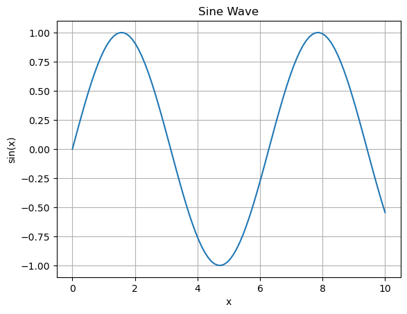
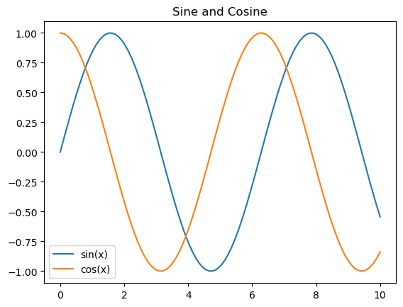
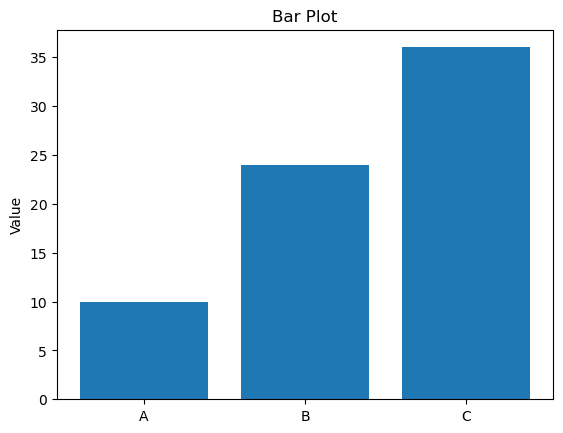
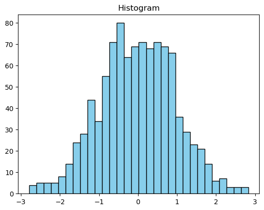
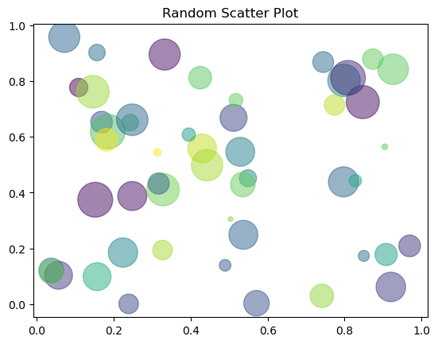
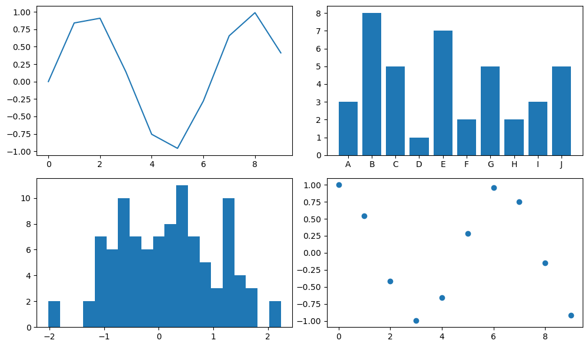
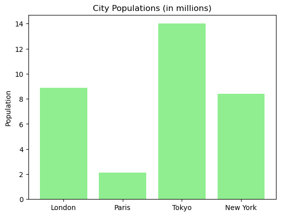

📊 Matplotlib for Data Visualization#
Matplotlib is a widely used Python library for creating static, animated, and interactive plots.
📥 Importing Libraries#
import matplotlib.pyplot as plt
import numpy as np
%matplotlib inline
📈 Line Plot#
x = np.linspace(0, 10, 100)
y = np.sin(x)
plt.plot(x, y)
plt.title('Sine Wave')
plt.xlabel('x')
plt.ylabel('sin(x)')
plt.grid(True)
plt.show()

📉 Multiple Lines on One Plot#
y2 = np.cos(x)
plt.plot(x, y, label='sin(x)')
plt.plot(x, y2, label='cos(x)')
plt.legend()
plt.title('Sine and Cosine')
plt.show()

📊 Bar Plot#
labels = ['A', 'B', 'C']
values = [10, 24, 36]
plt.bar(labels, values)
plt.title('Bar Plot')
plt.ylabel('Value')
plt.show()

📦 Histogram#
data = np.random.randn(1000)
plt.hist(data, bins=30, color='skyblue', edgecolor='black')
plt.title('Histogram')
plt.show()

📍 Scatter Plot#
x = np.random.rand(50)
y = np.random.rand(50)
colors = np.random.rand(50)
sizes = 1000 * np.random.rand(50)
plt.scatter(x, y, c=colors, s=sizes, alpha=0.5)
plt.title('Random Scatter Plot')
plt.show()

🖼️ Subplots#
# Dummy data
x = np.arange(10)
y = np.sin(x)
y2 = np.cos(x) # same size as x
labels = ['A', 'B', 'C', 'D', 'E', 'F', 'G', 'H', 'I', 'J']
values = np.random.randint(1, 10, size=10)
data = np.random.randn(100)
# Create 2x2 grid of plots
fig, axs = plt.subplots(2, 2, figsize=(10, 6))
axs[0, 0].plot(x, y)
axs[0, 1].bar(labels, values)
axs[1, 0].hist(data, bins=20)
axs[1, 1].scatter(x, y2)
plt.tight_layout()
plt.show()

✅ Practice Challenge#
Q: Generate and display a bar plot showing population sizes for 4 cities.
cities = ['London', 'Paris', 'Tokyo', 'New York']
populations = [8.9, 2.1, 14.0, 8.4]
plt.bar(cities, populations, color='lightgreen')
plt.title('City Populations (in millions)')
plt.ylabel('Population')
plt.show()
